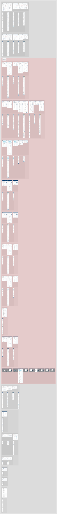
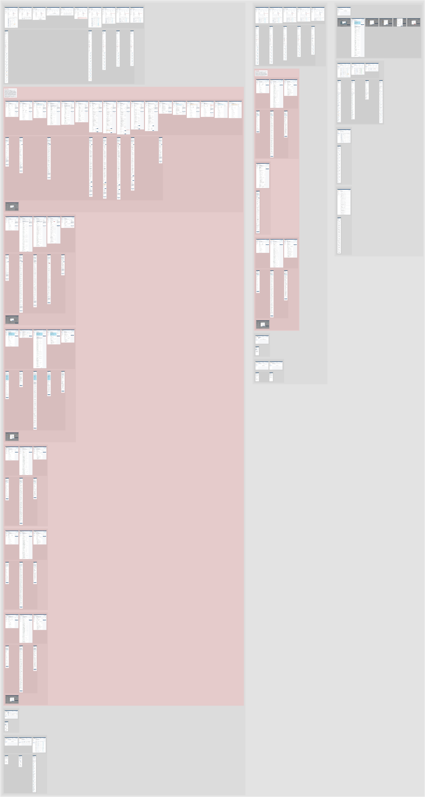
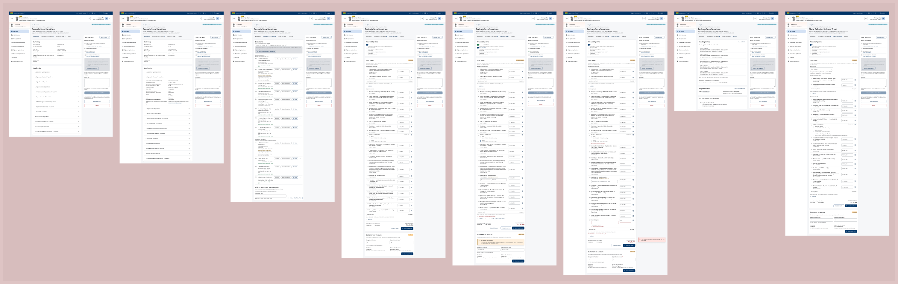
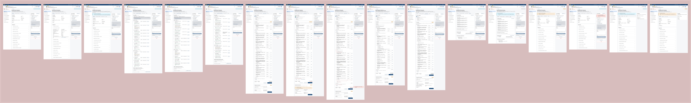
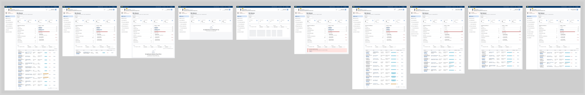
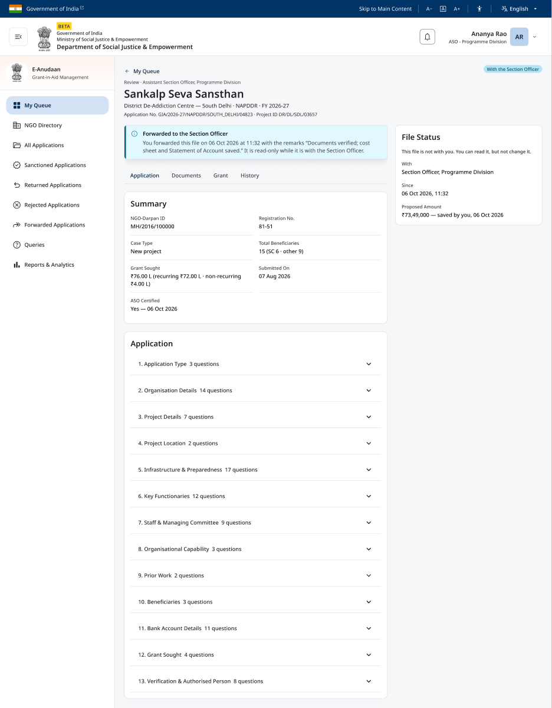
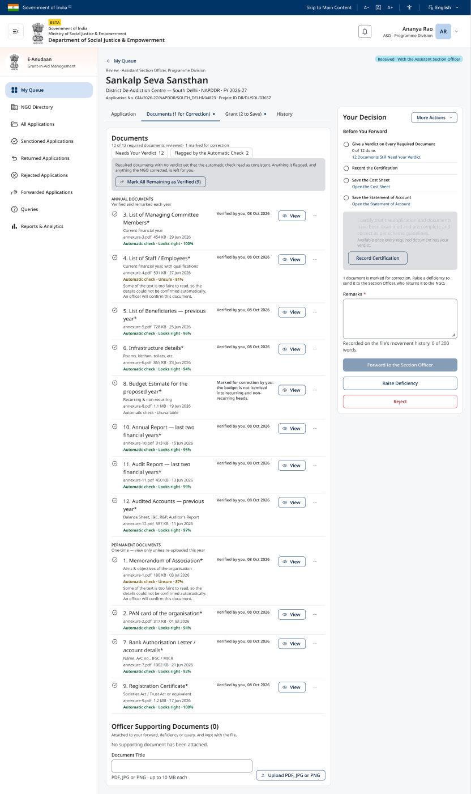
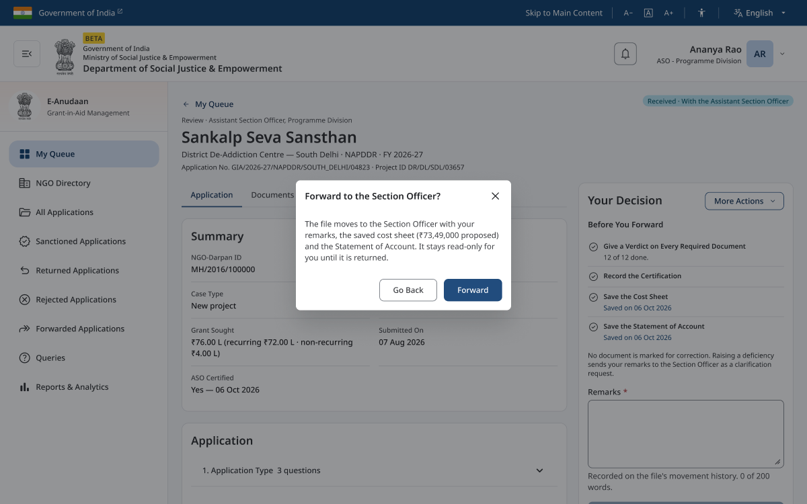
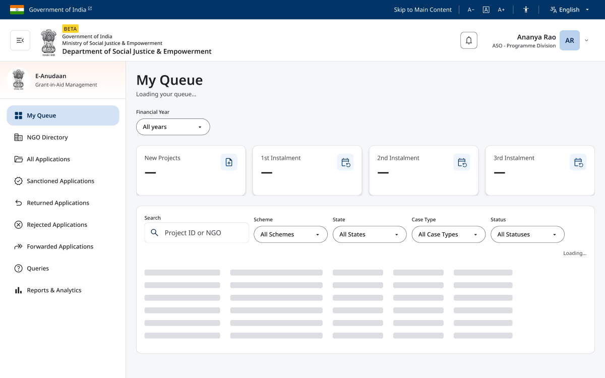
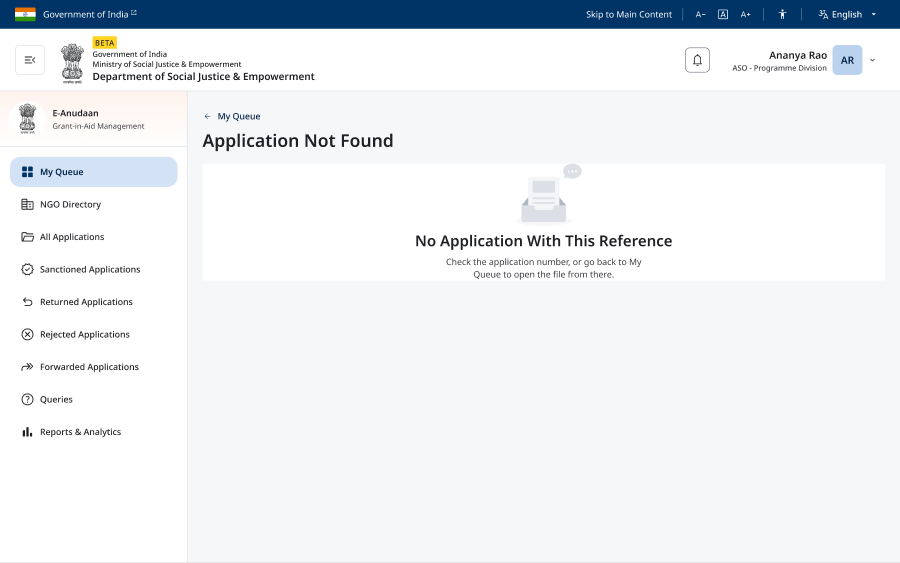

E-Anudaan Handoff — Page 3 by Division
8 Oct 2026. Page 3 · Officers · Reviewing Applications, re-organised by division and grade, with the Assistant Section Officer's missing NAPDDR states drawn (desktop). No screen was deleted.
The whole page


The Assistant Section Officer's NAPDDR row


My Queue, Programme Division

New screens, close up





What changed
| What | Before | After | Why |
|---|---|---|---|
| Officer columns | One column for both divisions | Programme Division · Integrated Finance Division · All Officers | An officer reads one column, top to bottom, for their own division |
| Journey names | "My Queue", "Queries" … split inside by division | "My Queue — Programme Division" and so on | A ticket can name one journey without ambiguity |
| Grade groups | No scheme in the name | "…, SHRESHTA File" / "…, NAPDDR File" | Every drawn grade file is SHRESHTA Mode 2; the name now says so |
| Screen names | Two patterns for a state | One: Division — Grade — Scheme, Tab (State) | Names sort and read the same everywhere |
| Pop-ups | All ten in one shared group | Four moved to the grade that uses them | A pop-up sits next to the screens that open it |
| Red note | Said "JS-PD" | Plain words, two new open points | No codes on the canvas; the new states raised two decisions |
| ASO NAPDDR states | 8 desktop screens | 17, plus the forward pop-up and Application Not Found | The dev portal showed states nobody had drawn |
| My Queue states | Populated only | + Filtered, Filtered to Nothing, Empty, Loading, Error | Every state a list can be in is designed |